JALUR FORMAL
SMK NU Ma’arif Kudus
Juni 2011 — Mei 2014Teknik Kendaraan Ringan (TKR)
Landasan pendidikan kejuruan di bidang teknik kendaraan ringan.
Operasi CNC · Problem Solving · Optimasi Proses · Data OperasionalMenggabungkan pengalaman operasional mesin, pemecahan masalah, optimasi proses, dan pengolahan data untuk mendukung kegiatan produksi.
Pengalaman Manufaktur dan Pengembangan Sistem Kerja
Saya lulusan SMK (TKR) dengan pengalaman lebih dari 3 tahun di lingkungan manufaktur kemasan karton.
Dalam peran sebagai Staf R&D Divisi Pisau, saya mengoperasikan dan merawat 2 mesin CNC, serta mengembangkan sistem record kerja berbasis Excel
Saya juga terbiasa menangani gangguan awal dan berkoordinasi lintas divisi untuk mendukung kelancaran operasional.
Fondasi pendidikan formal dan pembelajaran eksternal yang mendukung kompetensi kerja.
Teknik Kendaraan Ringan (TKR)
Landasan pendidikan kejuruan di bidang teknik kendaraan ringan.
Microsoft Excel
Pengolahan dan integrasi data, VLOOKUP, Conditional Formatting, PivotTable, dan visualisasi data.
Desain Grafis OACS
Pembelajaran desain vektor menggunakan CorelDRAW dan Adobe Photoshop untuk komunikasi visual dan pencetakan.
Kompetensi yang digunakan untuk mendukung proses produksi dan pemantauan operasional.
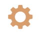
Pengoperasian Dieboard Laser Cutting dan Autoblade Bending, pemeriksaan pra-operasional, perawatan, serta pemantauan hasil proses.
Mengamati gangguan, melakukan pemeriksaan awal, menguji hasil, dan melibatkan teknisi terkait jika dibutuhkan.
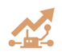
Penyesuaian file DXF, layout pemanfaatan material, serta pengoptimalan parameter proses untuk mendukung kualitas dan kelancaran produksi.
Pengolahan data operasional menggunakan tabel, formula, PivotTable, PivotChart, slicer, timeline, dan dashboard.
Peralatan perkakas dan software yang digunakan.
Gambaran umum alur pekerjaan dari gambar kerja hingga pemeriksaan hasil.
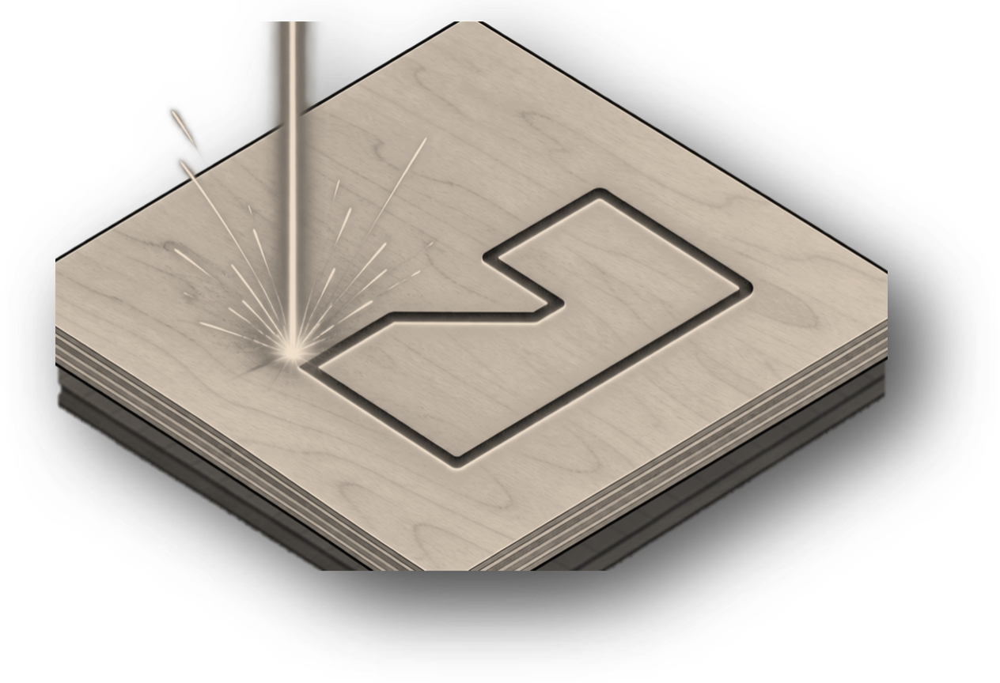
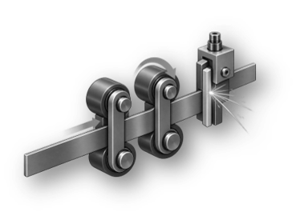
Menyiapkan file DXF dan daftar pekerjaan/outstanding.
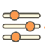
02 / SETUPMenyiapkan material, layout, dan parameter proses.
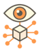
03 / PROSESMenjalankan proses dan memantau kondisi serta hasilnya.
Memeriksa presisi, konsistensi, dan melakukan pendataan.
Penanganan gangguan dilakukan bertahap, disertai pengujian dan eskalasi saat masalah belum terselesaikan.
Upaya mandiri: pemeriksaan dan troubleshooting awal belum menyelesaikan gangguan.
Eskalasi: koordinasi dengan teknisi dan rekomendasi developer untuk penggantian tabung CO₂.
Hasil: proses laser dan output kembali normal.
Pengamatan parameter, penyesuaian gambar kerja, dan validasi hasil untuk mendukung kualitas, konsistensi, serta efisiensi.
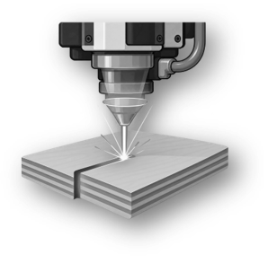
Ilustrasi nozzle laser dan material papanContoh visual proses pemotongan laser CO₂ pada papan multipleks. Gambar bersifat ilustratif, bukan foto area atau mesin perusahaan.
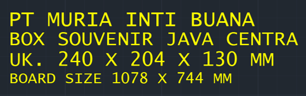
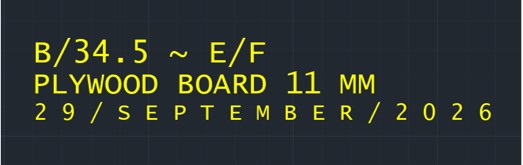
Ringkasan jenis pekerjaan dan pendekatan yang digunakan. Seluruh data pada contoh ini adalah data dummy.
Pencatatan rencana kerja dan pembaruan progres outstanding untuk membantu monitoring operasional.
Pengelolaan riwayat servis untuk memudahkan penelusuran catatan perawatan dan gangguan mesin.
Pengolahan data durasi penggunaan tabung CO₂ sebagai bahan monitoring dan evaluasi operasional.
Contoh pendekatan monitoring ketersediaan material serta penyesuaian layout file DXF dan identitas pekerjaan.
Data terstruktur membantu monitoring, analisis pola, evaluasi, dan penentuan tindak lanjut.
Perangkat Excel yang digunakan meliputi Table, Formula, PivotTable, PivotChart, Slicer, dan Timeline.
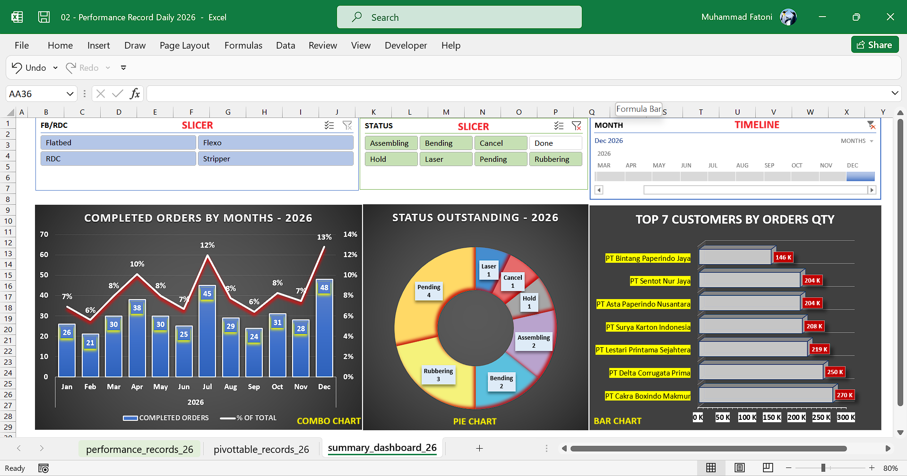
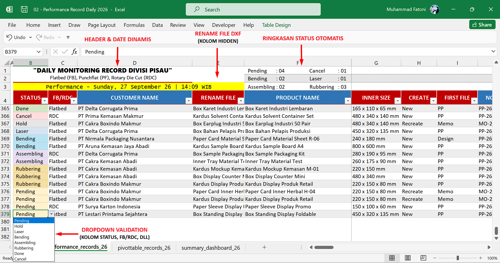
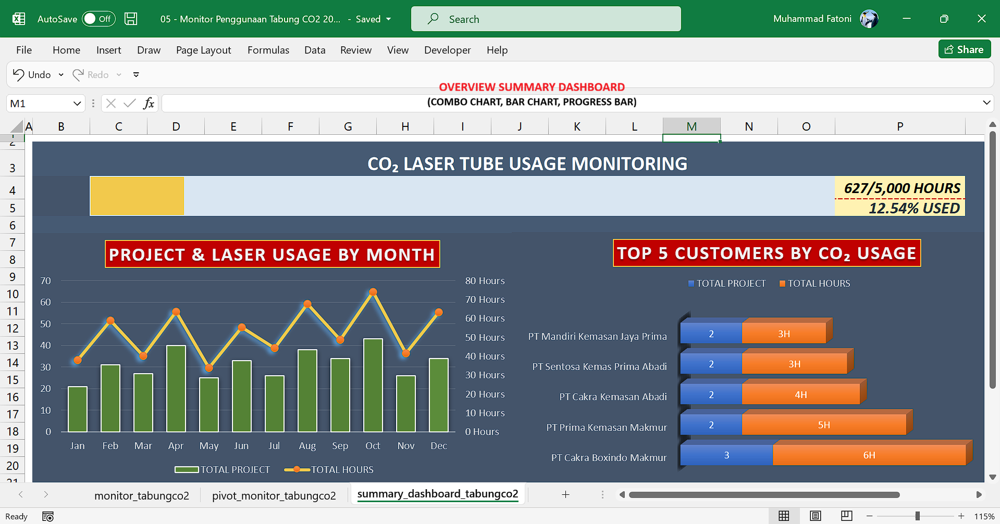
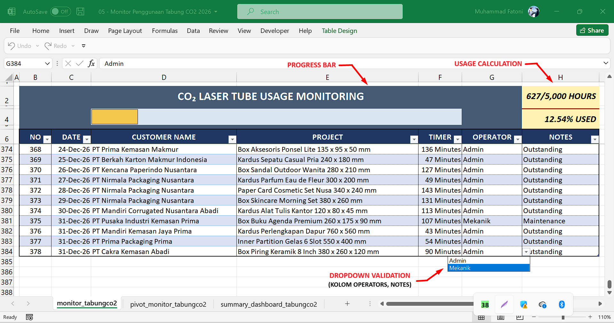
Putar video langsung di halaman untuk melihat alur kerja dan fitur monitoring.
Koordinasi dilakukan berdasarkan kebutuhan operasional dan jenis gangguan yang ditemukan.
Perbaikan kelistrikan.
Gangguan mekanis.
Sistem udara bertekanan dan pendingin.
Software dan jaringan lokal.
Database, bon, dan stok opname.
Prioritas pekerjaan mendesak.
Pengalaman kerja yang membentuk kedisiplinan, pelayanan, dan kemampuan operasional.
Terbuka untuk kesempatan kerja dan diskusi profesional.